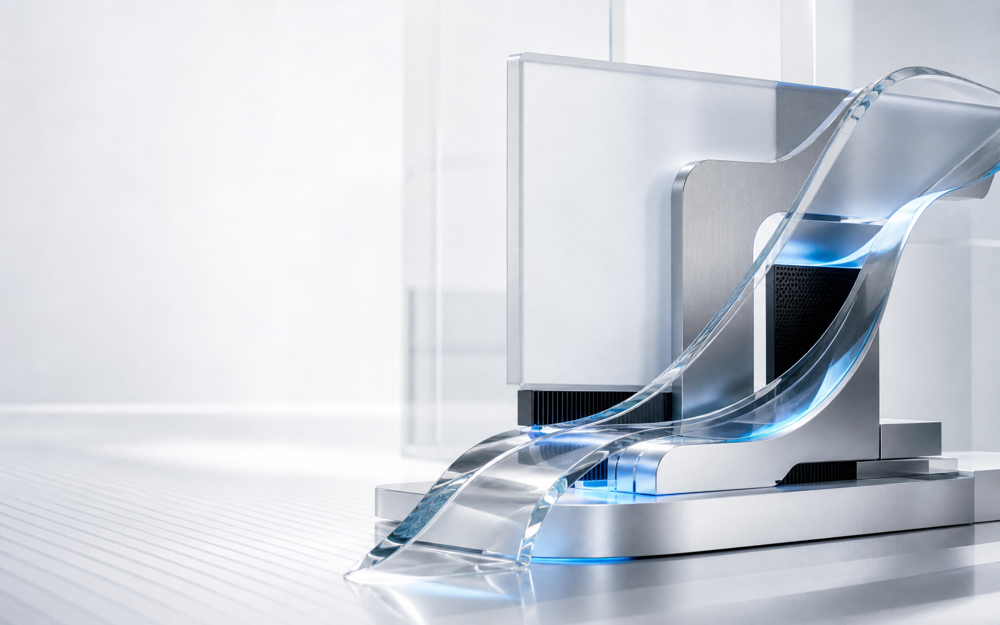
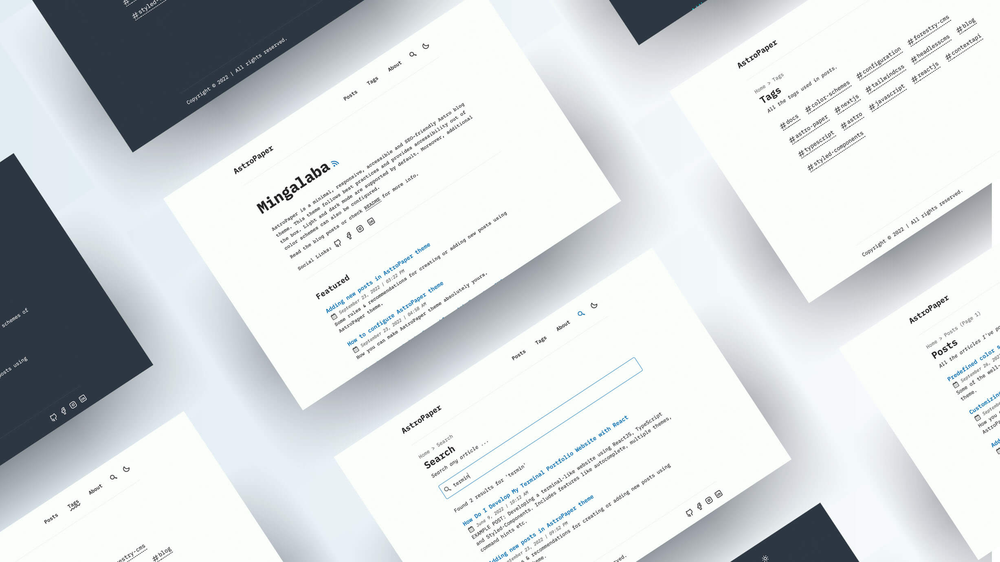

AI / Agent Development
探索智能工作流、模型能力与可落地的 AI 应用体验。

你好，我是
AI Developer / Full-stack Engineer / Creative Technologist
我专注于 AI 应用、现代 Web 与工程实践，也把学习、实验和思考写成可反复查阅的技术笔记。
ABOUT / 01
我关注的不只是功能是否实现，也关心系统是否清晰、体验是否自然，以及知识能否被准确传递。
探索智能工作流、模型能力与可落地的 AI 应用体验。
从交互界面到服务架构，构建完整、可靠且易维护的产品。
让信息层级、视觉语言和使用路径共同服务于真实目标。
把复杂问题拆开、验证并整理成能被理解和复用的内容。
FEATURED / 02
PROJECTS / 03

AI / COMPUTER VISION
围绕训练指标、数据配置与模型表现建立可解释的分析记录。
KNOWLEDGE SYSTEM
将零散的学习记录组织为可检索、可关联、可持续生长的知识库。